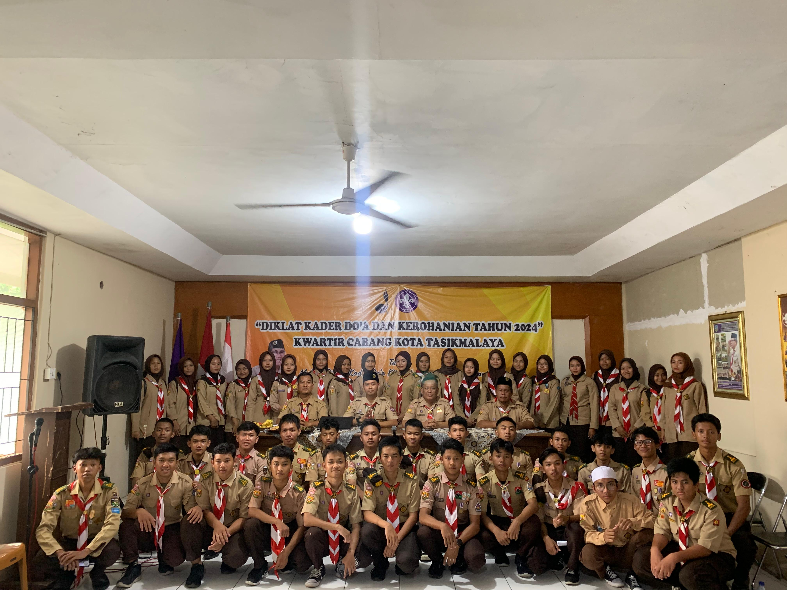
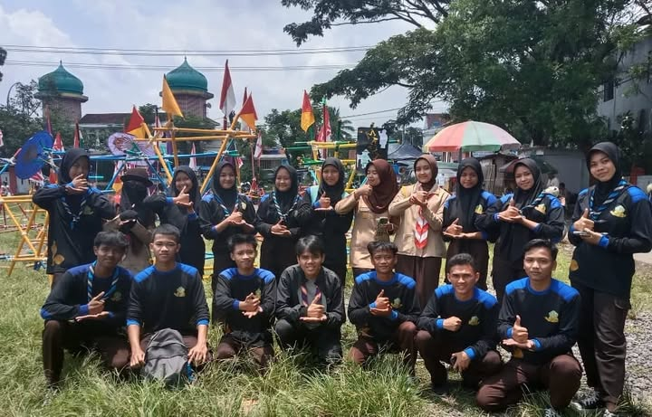
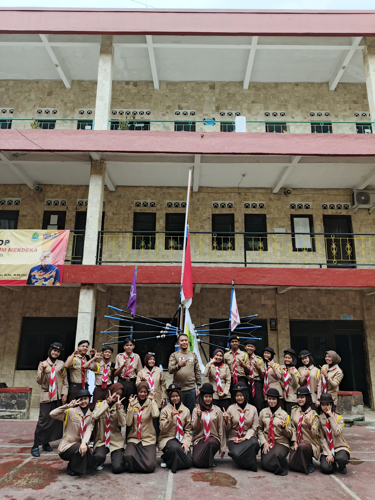
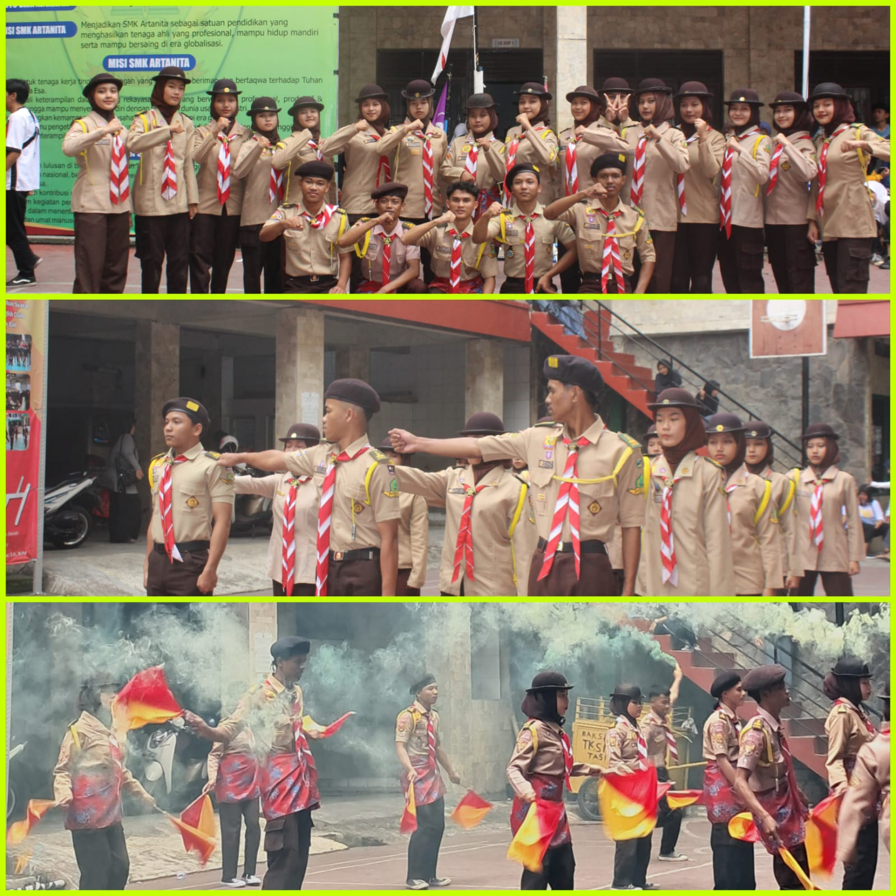
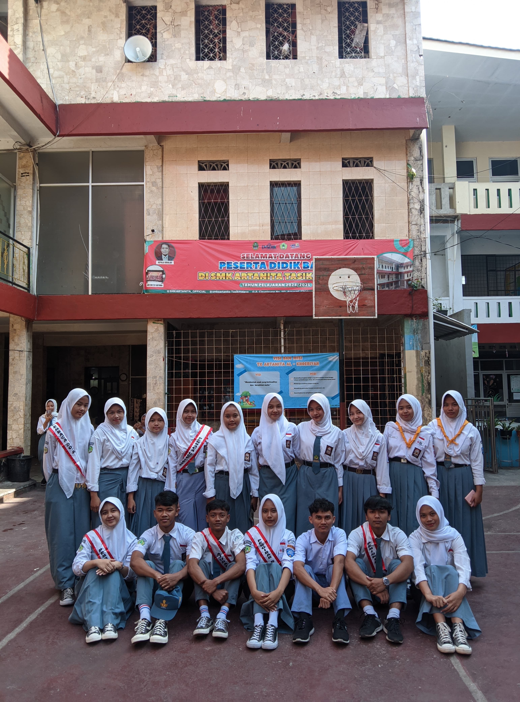
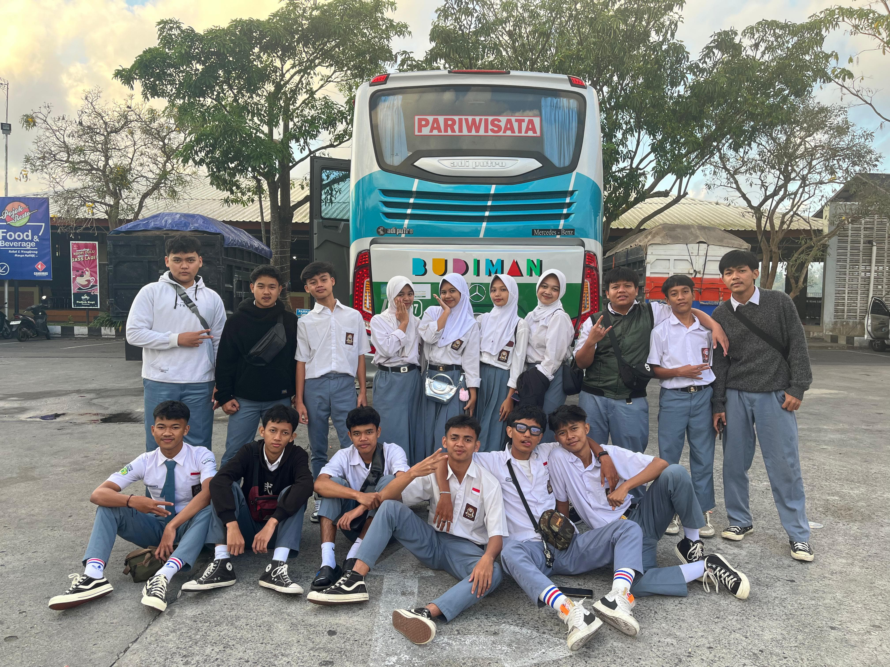

menjadi panitia permata tahun 2024/2025
menjadi panitia permata tahun 2024/2025
Halo! Nama Saya Ade Anggara. Saya seorang pelajar dengan minat di bidang RPL.
| Nama: | Ade anggara |
| Kelas: | XI RPL |
| Agama: | Islam |
| Anak ke: | 4(keempat) dari 4 bersaudara |
| Telepon: | 081933404437 |
| NIS: | 026393962 |
| Jenis kelamin: | laki-laki |
| Alamat: | Jalan Abah Amuy, Kp. Cihideung Kaler, Desa Cibunigeulis, Bungursari |
| NO HP: | 081933404437 |
| Hari | Mata Pelajaran | Guru |
|---|---|---|
| Senin | BK | Bu Yanti |
| PBO | Bu Alin | |
| MTK | Bu Rima | |
| PKK | Bu Sri | |
| Selasa | BK | Bu Yanti |
| Inggris | Bu Lis | |
| PAI | Bu Nining | |
| PKK | Bu Sri | |
| Rabu | PPWB | Pa Taufik |
| PPKN | Bu Yanti | |
| PKK | Bu Sri | |
| B.Indo | Bu Indi | |
| Kamis | PWPB | Pa Taufik |
| Basis Data | Bu Alin | |
| PBO | Bu Alin | |
| Jumat | PPL | Bu Dina |
| MTK | Bu Rima | |
| Penjas | Pak wildan |
Saya aktif dalam organisasi pramuka penegak bantara bagi saya bantara sangat berarti karena di bantara seperti rumah ke 2 dan juga bantara sangat bermanfaat bagi saya salah satunya dalam menguji mental saya dan rasa kepepimpinan di bantara juga saya mempunyai tanggung jawab menjalankan peraturan dan progam kerja,dan saya hanya masuk satu eskul yaitu badminton.
menjadi panitia permata tahun 2024/2025
 mengikuti upacara ulang tahun kwarcab tasikmalaya
mengikuti upacara ulang tahun kwarcab tasikmalaya
 menjadi perwakilan pangkalan smk artanita untuk mengikuti acara diklat doa
 perlombaan pramuka
 pelantikan anggota baru
 acara hut ambalan sayyidina umar fatimah azahra
acara hut ambalan sayyidina umar fatimah azahra
 pelatihan saat di LP3I
pelatihan saat di LP3I
 acara demo eskul pramuka
 menjadi panitia game online HOK
menjadi panitia game online HOK
 anggota bantara menjadi petugas upacara bendera hari senin
 kunjungan indrustri instalisasi